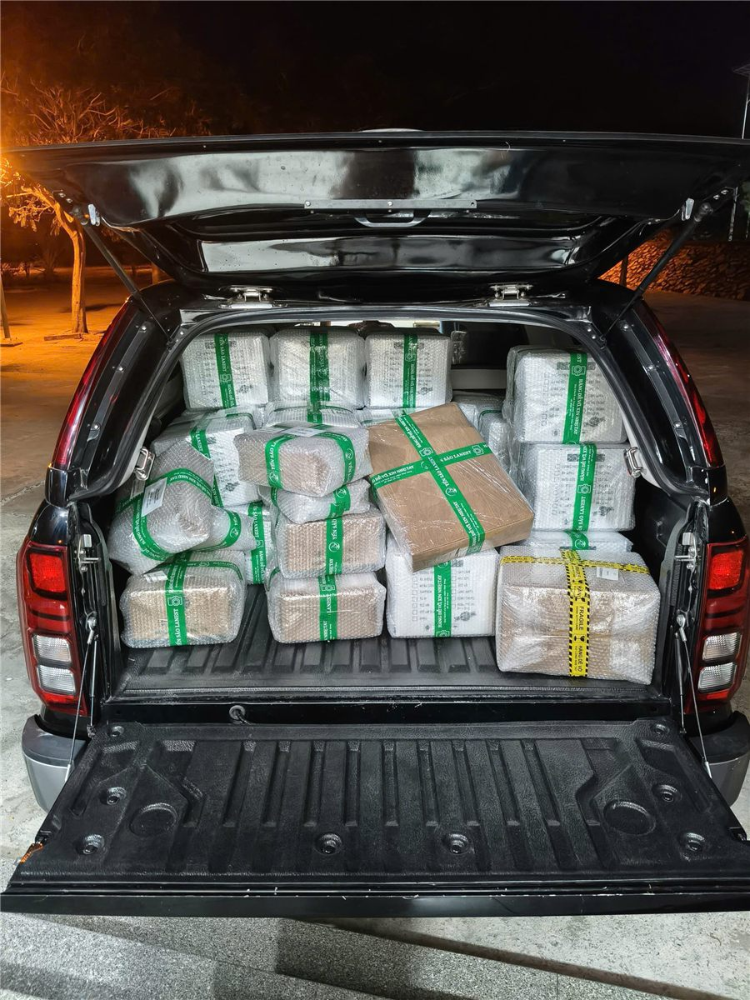

Trước khi mua hay nhập hàng, hỏi "Yến Sào Lanest có uy tín không" là câu hỏi đúng. Lanest không muốn anh chị tin vì một lời quảng cáo, nên bài này gom lại những gì có thể kiểm chứng: pháp lý, chứng nhận, cách làm hàng, hệ thống đại lý và đánh giá của khách. Anh chị tự xem và tự kết luận.
Cúp Thương hiệu số 1 Việt Nam 2024 (Vietnam No.1 Brand Awards) của Yến Sào Lanest
1. Lanest là ai?
Công ty TNHH Yến Sào Lanest, mã số doanh nghiệp 4201991164, trụ sở tại Khu đô thị Căn Cứ Cam Ranh, Khánh Hòa. Người sáng lập bắt đầu bán yến từ năm 2017 tại Cam Ranh, chuyển hẳn sang làm yến toàn thời gian sau mùa dịch 2021, và đưa hộ kinh doanh lên thành công ty từ tháng 12/2023. Khi được hỏi vì sao chọn nghề này, chị kể:
"mình muốn chăm sóc sức khỏe của mọi người ngay từ khi mọi người còn còn mới kia."
Câu chuyện đầy đủ có trong bài câu chuyện thương hiệu Yến Sào Lanest.
2. Giấy tờ và chứng nhận
| ISO 22000:2018 | Quản lý an toàn thực phẩm, số chứng chỉ 240864.FMS.CN24, hiệu lực đến 23/09/2027 |
| Tự công bố sản phẩm | Nhiều sản phẩm có bản tự công bố kèm phiếu kiểm nghiệm đạt QCVN 6-2:2010/BYT |
| Kiểm nghiệm | Mẫu Yến Sào Tinh Chế Lanest tại AVATEK: đạm 62,7%, không phát hiện Salmonella, không phát hiện kim loại nặng |
| Mã vạch GS1 | Đăng ký với GS1 Việt Nam, hiệu lực đến 31/12/2027 |
| Quyền tác giả logo | Giấy chứng nhận số 9673/2023/QTG |
| Giải thưởng | Thương hiệu số 1 Việt Nam 2024 (Vietnam No.1 Brand Awards), "Sản phẩm – Dịch vụ tốt nhất vì người tiêu dùng 2024" |
Xem ảnh chứng chỉ và cách đọc trong bài chứng nhận ISO 22000 của Lanest.
3. Cách làm hàng
Uy tín của một hãng yến nằm ở chỗ khách không nhìn thấy. Lanest có đội thợ riêng từ năm 2023; mỗi mẻ yến tinh chế đi qua 4 chốt kiểm: thợ nhặt, thợ đảo lại, thợ đắp, nhân viên kiểm tra cuối. Ba điều Lanest không làm: không tẩy trắng, không độn tăng trọng lượng, không "chữa" hàng không đạt. Lý do của quyết định tự làm là một lần chính người sáng lập bị nhập hàng thiếu cân, 100g yến tinh chế ngâm sấy lại chỉ còn 84g. Chi tiết trong bài bên trong xưởng yến Lanest.
Lanest cũng kiểm nghiệm đều đặn chứ không chỉ một lần. Người sáng lập nói:
"hàng tháng đều tự gửi mẫu đi kiểm nghiệm thật."
4. Hệ thống đại lý và khách mua lại
Lanest bán chủ yếu qua đại lý và nhà phân phối, giao hàng toàn quốc. Theo sổ công nợ tháng 9/2026, Lanest đang làm việc với hơn 200 đại lý và khách sỉ. Trong kỳ 3 đến 9/2026, khoảng 74% khách đã mua lại từ hai lần trở lên.
Với đại lý, Lanest giữ giá chung bằng chính sách công khai: bán đúng giá niêm yết, cấm phá giá, cấm lôi kéo khách của nhau. Và một nguyên tắc người sáng lập tự đặt cho công ty:
"mình làm việc rất là uy tín mình không bao giờ đụng tới data khách hàng của đại lý ở bên dưới"

Thùng hàng Lanest xếp lên xe đi giao cho đại lý
5. Khách hàng đánh giá thế nào?
Lanest có làm khảo sát khách hàng. Đợt cuối tháng 8 đầu tháng 9/2026, phần lớn người trả lời là đại lý và khách sỉ, điểm trung bình trên thang 5:
- Chăm sóc, tư vấn: 4,76
- Thái độ phục vụ: 4,71
- Phụ kiện, hình ảnh: 4,71
- Đóng gói: 4,67
- Chất lượng sản phẩm: 4,48
Lanest công bố đúng con số, kể cả tiêu chí có điểm thấp nhất, vì góp ý của khách là thứ giúp sản phẩm tốt lên.
6. Tự kiểm tra Lanest trong 5 phút
- Tra mã số doanh nghiệp 4201991164 trên Cổng thông tin quốc gia về đăng ký doanh nghiệp.
- Gọi 0258 6278 627 xin bản tự công bố và phiếu kiểm nghiệm của sản phẩm anh chị định mua.
- Xem nhãn: yến hũ ghi rõ 7g yến tươi mỗi hũ; dòng nguyên chất ghi 1,5g tổ yến mỗi hũ.
- Với yến tinh chế, ngâm và sấy lại để tự cân, như cách người sáng lập Lanest từng làm.
Câu hỏi thường gặp
Yến Sào Lanest ở đâu?
Trụ sở tại Kios 2 N3A, Khu đô thị Căn Cứ Cam Ranh, Khánh Hòa. Hotline 0258 6278 627.
Yến Sào Lanest có xuất hóa đơn không?
Có. Lanest xuất hóa đơn đầy đủ, giá đã gồm VAT 8%.
Mua lẻ hay làm đại lý Lanest bắt đầu từ đâu?
Mua lẻ xem trang yến hũ chưng sẵn; muốn làm đại lý xem trang nhập yến làm đại lý.